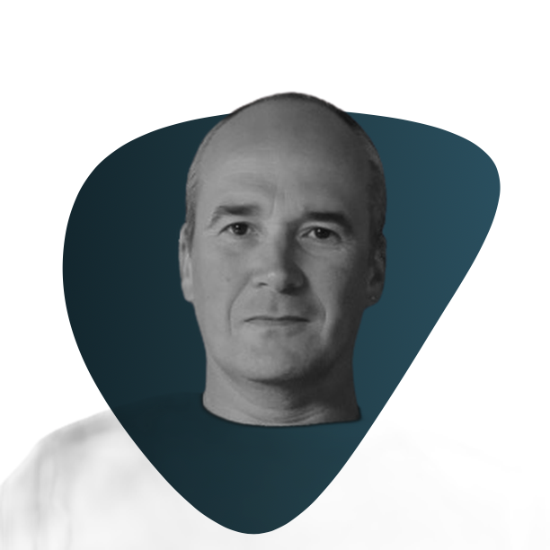

« J'aime les mots qui ouvrent les portes. Ceux qui permettent de comprendre une vie autant que de la raconter. »

Éric Collenne · Biographe · Vosges
« Je ne cherche pas seulement à raconter une vie. Je cherche à comprendre ce qui lui donne son sens. »
Je suis Éric Collenne, un explorateur des récits de vie. Je suis installé dans les Vosges, près d'Épinal.
Chaque vie est faite de souvenirs, de rencontres, d'épreuves, de choix, de silences parfois. Pris séparément, ces moments racontent des épisodes. Reliés entre eux, ils dessinent un parcours. C'est ce chemin que j'aime explorer.
Avant de devenir biographe, j'ai été cadre, chercheur, puis analyste et architecte. Cette manière de travailler ne m'a jamais quitté : observer, questionner, faire des liens, chercher ce qui éclaire une situation. Aujourd'hui, je mets cette même curiosité au service des histoires de vie.
Je ne me contente pas de recueillir des souvenirs. Au fil des entretiens, je cherche les mots qui ouvrent les portes, les questions qui réveillent une mémoire, les fils invisibles qui relient les événements entre eux. Mon rôle n'est pas d'interpréter votre histoire à votre place, ni de vous dire qui vous êtes. Il est de vous écouter avec attention, de construire un récit fidèle à votre vécu et de mettre en lumière ce qui en fait la cohérence.
J'ai notamment publié La Méthode Michelin – Comment rendre les salariés inaptes au travail, un ouvrage né de mon propre parcours professionnel et d'une réflexion sur la souffrance au travail. Cette démarche d'écriture, prolongée par une reconnaissance judiciaire de la faute inexcusable de mon ancien employeur, a renforcé une conviction qui m'habite encore aujourd'hui : raconter une histoire peut aussi permettre de lui donner une place, de la comprendre et de la transmettre.
J'accompagne celles et ceux qui souhaitent laisser une trace à leurs proches, transmettre leur parcours ou revenir sur une période importante de leur existence. Je crois profondément qu'une biographie n'est pas seulement un livre. C'est un espace où une vie peut être racontée avec justesse, comprise avec délicatesse et transmise avec authenticité.
Prendre contactAvant les mots, il y a ce qui cherche à se dire. Je prends le temps d'écouter, sans jugement, sans précipitation.
Tout ce qui est partagé dans le cadre de nos échanges reste strictement confidentiel. Vous restez maître de votre récit.
Chaque texte est travaillé avec soin, relu, affiné. Votre histoire mérite les mots justes.
Un accompagnement biographique repose sur une relation de confiance qui se construit dans la durée.
Un récit de bascule hanté par une question centrale : Pourquoi ? Né dans les Hautes-Vosges, ce texte suit une quête de réponses face à l'acte de partir. Préfacé par Marie de Hennezel.
Comment rendre les salariés inaptes au travail. Un témoignage sans concession, suivi d'une victoire judiciaire reconnaissant la faute inexcusable de Michelin.
Si vous souhaitez en savoir plus ou simplement échanger, contactez-moi. Nous prendrons le temps d'un premier échange.
Me contacter